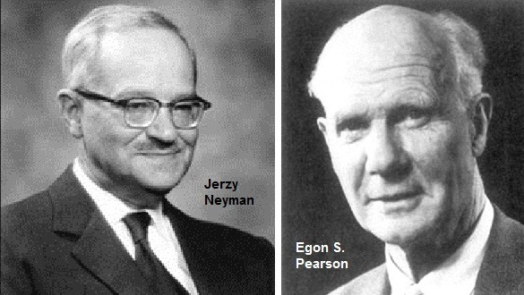

05:00
Welcome to Bayes!
Day 01
Prof Amanda Luby
Carleton College
Stat 340 - Fall 2025
Plan for today
- Intros
- Intro to Bayesian Thinking
- Syllabus
About me
- Ellis (almost 1.5!)
- Second year at Carleton
- Taught at Swarthmore for 5 years before moving to MN
- PhD in Statistics & Data Science from Carnegie Mellon University
- Grew up in Minnesota, went to St Ben’s as an undergrad

My crochet journey this summer

- Decided I wanted to make a basket
- Skipped “practice these stitches” and just went for it
- Didn’t understand the pattern, watched a couple of youtube videos from random creators and went for it
- Kept going even when I was very clearly doing something wrong
My crochet journey this summer

- Asked an expert (my sister) for advice
- Did “practice problems” using easier material (yarn) and bigger hook
- Found a reliable internet source for videos and tutorials
- Started being way more careful about checking my work and redoing things if I wasn’t sure
Intros
- Name
- Something you did over the summer
- What makes you nervous about this class or term?
- Something about yourself you are proud of
Warm Up
- What are the key takeaways from:
- Stat250: Stat Inference
- Stat230: Regression
- What do you already know about Bayesian statistics?
05:00
Statistical models
A statistical model consists of
a collection of random variables to describe observable data,
the possible joint distribution(s) of the random variables,
and the parameters, \(\boldsymbol \theta\), that define those distributions
R.A. Fisher
1890-1962
- Variance
- ANOVA
- Null hypothesis
- Maximum likelihood estimation
- p-value
- Lots of contributions in genetics
- Also a eugenecist
Neyman & Pearson

- Confidence interval
- Correlation
- Regression
- Standard deviation
- Effect size
- “Optimal” tests
- \(\alpha\) and \(\beta\)
- Type I and II error
Frequentist vs Bayesian

Bayes
All this guy did was Bayes’ rule:
\(P(A|B) = \frac{P(B|A) P(A)}{ P(B)}\)
Example: coin flip
Frequentist vs Bayesian
Frequentist
- “Classical” statistics
- Probability is a long-run frequency
- Make decisions based on a p-value
- Type I and Type II errors
- Confidence intervals
Bayesian
- Probability is a subjective belief
- Update “prior” probabilities with data to obtain “posterior” probabilities
- Make decisions according to posterior probabilities
- “Credible” intervals
Bayesian Personality Quiz
Q1
When flipping a fair coin, we say that “the probability of flipping Heads is 0.5.” How do you interpret this probability?
- If I flip this coin over and over, roughly 50% will be Heads.
- Heads and Tails are equally plausible.
- Both a and b make sense.
Q2
An election is coming up and a pollster claims that candidate A has a 0.9 probability of winning. How do you interpret this probability?
- If we observe the election over and over, candidate A will win roughly 90% of the time.
- Candidate A is much more likely to win than to lose.
- The pollster’s calculation is wrong. Candidate A will either win or lose, thus their probability of winning can only be 0 or 1.
Q3
Consider two claims.
- Zuofu claims that he can predict the outcome of a coin flip. To test his claim, you flip a fair coin 10 times and he correctly predicts all 10.
- Kavya claims that she can distinguish natural and artificial sweeteners. To test her claim, you give her 10 sweetener samples and she correctly identifies each.
In light of these experiments, what do you conclude?
- You’re more confident in Kavya’s claim than Zuofu’s claim.
- The evidence supporting Zuofu’s claim is just as strong as the evidence supporting Kavya’s claim.
Q4
Suppose that during a recent doctor’s visit, you tested positive for a very rare disease. If you only get to ask the doctor one question, which would it be?
- What’s the chance that I actually have the disease?
- If in fact I don’t have the disease, what’s the chance that I would’ve gotten this positive test result?
Results
Give yourself:
- +1 for each A
- +3 for each B
- +2 for C on Q1
- -2 for C on Q2
Results:
- Score <5: your thinking is pretty frequentist
- Score >9: your thinking is pretty Bayesian
- 6-8: your leaning changes depending on the scenario
Tentative schedule
| Topic | Chapters | Approx. Duration |
|---|---|---|
| Intro | 1-2 | 1 week |
| Conjugate Analysis | 3-5 | 2 weeks |
| MCMC | 7 | 1 weeks |
| Bayesian Regression | 9-14 | 4 weeks |
| Hierarchical Models | 15 | 2 weeks |
Syllabus
Course description
The Bayesian approach to statistics provides a powerful framework for incorporating prior knowledge into statistical analyses, updating this knowledge with data, and quantifying uncertainty in results. This course serves as a comprehensive introduction to Bayesian statistical inference and modeling, an alternative to the frequentist approach to statistics covered in previous classes. Topics include: Bayes’ Theorem; prior and posterior distributions; Bayesian regression; hierarchical models; and model adequacy and posterior predictive checks. Computational techniques will also be covered, including Markov Chain Monte Carlo methods, and modern Bayesian modeling packages in R.
Course Objectives
After completing this course, you should be be able to demonstrate your competency with:
- Explaining the differences between frequentist and Bayesian approaches to statistics and data analysis
- Selecting appropriate prior distributions and likelihood models for Bayesian analysis
- Using modern software to fit Bayesian models and assess their performance
- Interpreting results from Bayesian analyses
Textbook:
Bayes Rules! An Introduction to Applied Bayesian Modeling by Johnson, Ott, and Dogucu
The book is freely available at <bayesrulesbook.com>
Computing:
We’ll be using R and RStudio throughout the course. If you’ve downloaded R to your own computer from a different class, great! If not, there are instructions available on the course website
What will you do in this course?
Each of the following components are important for your learning and therefore part of your final grade calculation:
- 30% Homework due once per week
- 10% Individual (graded on completion)
- 10% Group (correctness and completion)
- 10% Homework quizzes (correctness)
- 10% Midterm project + presentation
- 20% Final project + presentation
- 20% Exam I
- 20% Exam II
What will a typical day/week look like?
Before class:
- Read a chapter
- Come with questions
- Be prepared to try what was covered
In class:
- Lecture/demo
- Sometimes review of chapter
- Sometimes new
- Hands-on work or coding in R
- Time for group assignments
After class:
- Finish group assignments
- Work on individual assignments
Quality over Quantity
Office hours (tentative)
| Day | Time | Type | Location |
|---|---|---|---|
| Monday | 12:30-1:30 | Drop-in | CMC 307 |
| Tuesday | 2-3 | Drop-in | CMC 307 |
| Wednesday | 3-41 | Drop-in | CMC 307 |
| Friday | 10-112 | Drop-in | CMC 307 |
I will also have at least 1 hour of individual appointments available on my calendar per week
Communication
- Moodle: assignments, slides, and grades
- Slack: homework questions, announcements, discussion
- Email: personal matters, time-sensitive announcements
Slack is the fastest way to reach me. I typically will respond to messages 3x per weekday. I try to respond to emails within 48 hours. I’m online sporadically on evenings and weekends to devote time to family and rest – I hope you also use this time to reset and recharge!
Advice from past students:
- START HOMEWORKS EARLY
- Do the reading! The textbook is really great and can help give you a motivation for everything that’s happening in class.
- Start the problem sets early and go to office hours!
- ask questions! you will inevitably not understand everything in the course at first pass.
- Go to her office hours!!!!!
- Read the book, and ask questions!
- Try to start the homework problems on the day that they are assigned.
- This course is very fast-paced and intensive, so it may not be the right fit for everyone. Students who are not prepared for a compact schedule, or who are looking for an easier workload, may find it challenging. A solid foundation in statistics and a strong level of commitment are essential to keep up with the material and succeed in the class.
- Ask questions in class, Amanda has no problem reviewing a previously discussed concept.
- Work with other people in the class, collaboration is key
- Start the homework early! Give yourself time to get things done, to understand, and to pause. Don’t feel afraid to ask questions; she’s so accessible.
- Spend some time reviewing handouts before doing homework.
The “Genius Myth”
It’s sometimes easy to buy into the “genius myth” when it comes to math/stat courses: that you need to be a “math person” and have some innate mathematical ability in order to do well or become a statistics major. This could not be further from the truth! The best statisticians don’t necessarily have the “best” math or programming background, but are people that are able to formulate interesting questions and use math and programming to rigorously answer those questions. Many of the best statisticians I know became statisticians because they were initially interested in something else (biology, public health, psychology, neuroscience, physics, etc.) and realized that being able to answer important questions with data was not only valuable but fun and interesting. Being able to perform interesting statistical analyses is a skill that is learned, not an innate ability, and working hard at developing that skill is the point of this course.
Academic Integrity
You are expected to follow Carleton’s policies regarding academic integrity. I encourage you to discuss the homework problems with others and use the resources available to you to try to figure out tough problems. You should code and write up your solutions on your own. Exams must be done by yourself without communicating with others; all work must be your own. The use of textbook solution manuals (physical or online), course materials from other students, or materials from previous versions of this course are not allowed. Copying, paraphrasing, summarizing, or submitting work generated by anyone but yourself without proper attribution is considered academic dishonesty (this includes output from LLMs).
Please ask if you are unsure of whether or not your actions are complying with the assignment/exam/project instructions. Always default to acknowledging any help received. Cases of suspected academic dishonesty are handled by the Provost’s Office and I am obligated to report any suspected violations of this policy.
More on “AI”
Large-language models (e.g. ChatGPT, Gemini, etc.) should only be used for help interpreting R’s error messages or suggestions for your own code once you have already attempted the problem. You should not copy and paste course material into or out of an AI text generator.
I also have a few rules in place to protect my intellectual property. You may not record my lectures using tools such as Otter.ai or upload any video or audio recordings to generate transcripts or study notes. You may not upload my course materials (slides, assignment prompts, note sets, etc.) into AI tools or homework help sites (such as chegg).
“AI” tools are new for all of us and it’s OK to have questions about what is and isn’t appropriate!
Diversity & Inclusion
We all come to class with different backgrounds and experiences, and this diversity makes our class environment richer. We value diversity and inclusion, and are committed to a climate of mutual respect and full participation in and out of the classroom. This class strives to be a learning environment that is usable, equitable, inclusive and welcoming, regardless of race, ethnicity, religion, gender and gender identities, sexual orientation, ability, socioeconomic background, and nationality. If you anticipate or experience any barriers to learning, please discuss your concerns with me.
Accomodations
Carleton College is committed to providing equitable access to learning opportunities for all students. The Office of Accessibility Resources (Henry House, 107 Union Street) is the campus office that collaborates with students who have disabilities to provide and/or arrange reasonable accommodations. If you have, or think you may have, a disability, please contact OAR@carleton.edu to arrange a confidential discussion regarding equitable access and reasonable accommodations. You are also welcome to contact me privately to discuss your academic needs. However, all disability-related accommodations must be arranged, in advance, through OAR.
Title IX
Please be aware that all faculty are “responsible employees”, which means that if you tell me about a situation involving sexual harassment, sexual assault, dating violence, domestic violence, or stalking, I must share that information with the Title IX Coordinator. Although I have to make this notification, you will control how your case will be handled, including whether or not you wish to meet with the Title IX coordinator or pursue a formal complaint.
Take care of yourself
Do your best to maintain a healthy lifestyle this semester by wearing a mask if you don’t feel well, eating a vegetable every day, exercising, avoiding excessive drug and alcohol use, getting enough sleep, and taking some time to relax. Your mental health is more important than your grade in this course. There are many helpful resources available on campus and an important part of the college experience is learning how to ask for help. If you are experiencing mental health symptoms as a result of coursework, please speak with me so we can address the problem together.